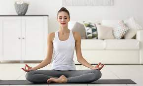
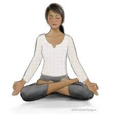
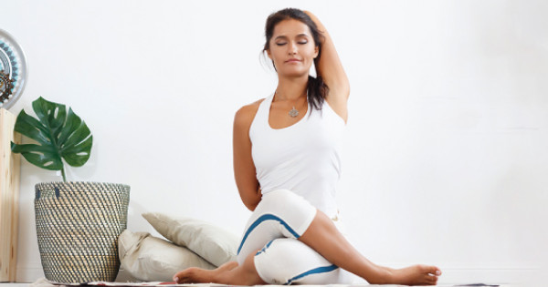
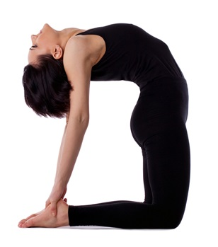
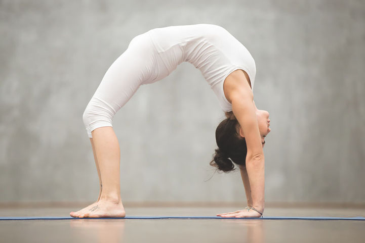
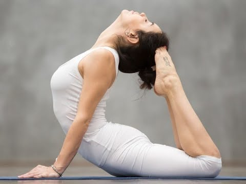
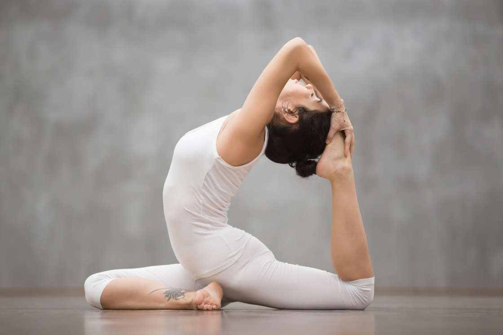

TYPES OF YOGA ASANAS
Meditation

Meditation is a practice where an individual uses a technique – such as mindfulness, or focusing the mind on a particular object, thought, or activity – to train attention and awareness, and achieve a mentally clear and emotionally calm and stable state.
Padmasana

Padmasana is a cross-legged sitting meditation pose from ancient India, in which each foot is placed on the opposite thigh. It is an ancient asana in yoga, and is widely used for meditation in Hindu, Tantra, Jain, and in buddhist traditions.
Gomukhasana

Gomukhasana is a seated asana in hatha yoga and modern yoga as exercise, sometimes used for meditation.
Ustrasana

Ustrasana or Camel Pose is a kneeling back-bending asana in modern yoga as exercise.
Chakra Asana

Chakrasana or Urdhva Dhanurasana is an asana in yoga as exercise. It is a backbend and is the first pose of the finishing sequence in Ashtanga Vinyasa Yoga. It gives great flexibility to the spine. In acrobatics and gymnastics this body position is called a bridge.
Poorna Bhunjangasana

Poorna Bhunjangasana or Full Cobra Pose aims to keep the spine supple and healthy. On a pranic level, this asana has a strong effect on all the organs related to swadhisthana, manipura, anahata and vishuddhi chakras.
Eka Pada Rajakapotasana

Eka Pada Rajakapotasana or [One-legged] King Pigeon Pose is a seated back-bending asana in modern yoga as exercise. The Yin Yoga form of the asana is named Swan Pose.